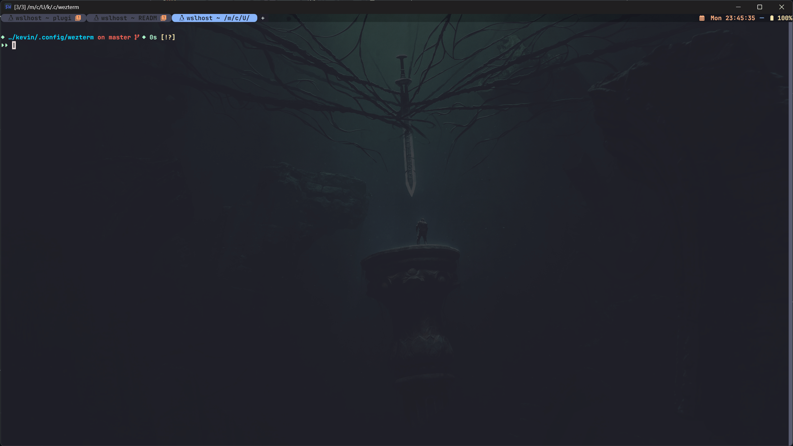

01
My pick for tab shapeRounded tabs + an atmospheric background

Tabs
Compact capsules, a bright active fill, muted neighbors, and small icons. Rounded ends make the row feel softer without needing a tall toolbar.
The whole setup
A dim illustration supplies atmosphere; JetBrainsMono Nerd Font and a tight status row hold it together. The config includes a background selector and a focus toggle.
What I would borrow
The capsules and clear active state, recolored in your lavender. Use short project names and give them more room than your current 12-cell cap.